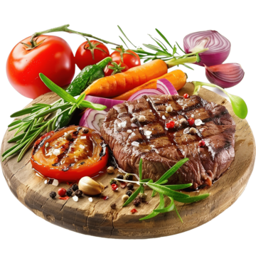
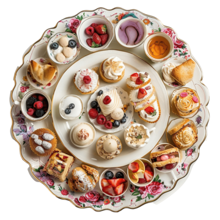
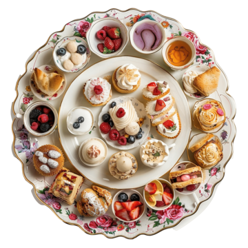

Welcome to my first website! This website was designed during my progression through the Odin Project Foundations course. This site was made to implement basic HTML and CSS components that were taught throughout the course. Here you can find recipies I found online at Allrecipies.
 

Recipe 1: Butter Chicken
Recipe 2: Lasagna
Recipe 3: Brownies